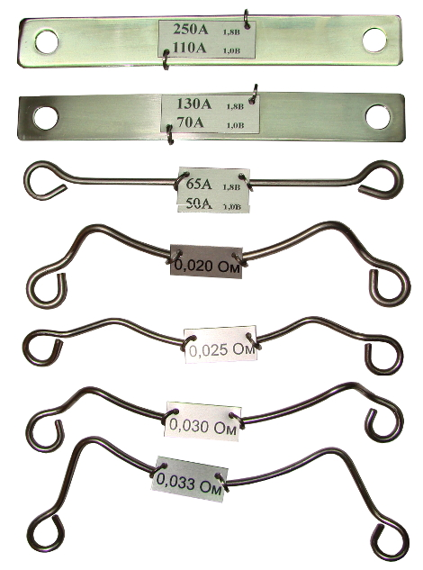
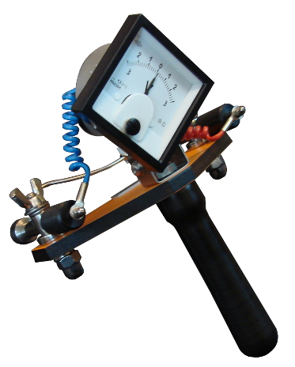
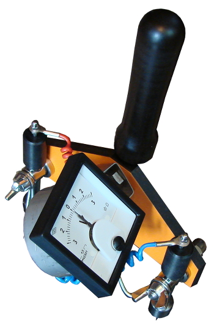

Емкости аккумуляторов, контролируемых нагрузочной вилкой НК-500 в зависимости от допускаемого изготовителем максимального тока разряда, или установленного эксплуатирующей организацией режима (тока) разряда, приведены в таблице 1 (для кислотных аккмуляторов) и в таблице 2 (для щелочных аккумуляторов)
Таблица 1. Емкости проверяемых кислотных аккумуляторов.
|
Установленный изготовителем аккумулятора или эксплуатирующей организацией максимальный ток разряда, А |
Маркировка сменного сопротивления вилки |
||
|
«65А
1,8В |
«130А
1,8В |
«250А
1,8В |
|
|
0,1Сном (10-часовой режим разряда) |
650...720 Ач |
1300...1430 Ач |
2500...2750 Ач |
|
0,2Сном (5-часовой режим разряда) |
320...350 Ач |
650...715 Ач |
1250...1390 Ач |
|
0,5Сном (2-часовой режим разряда) |
130...140 Ач |
260...286 Ач |
500...555 Ач |
|
1Сном (1-часовой режим разряда) |
65...72 Ач |
130...143 Ач |
250...280 Ач |
Таблица 2. Емкости проверяемых щелочных аккумуляторов.
|
Установленный изготовителем аккумулятора или эксплуатирующей организацией максимальный ток разряда, А |
Маркировка сменного сопротивления вилки |
||
|
«65А 1,8В |
«130А 1,8В |
«250А 1,8В |
|
|
0,2Сном (5-часовой режим разряда) |
250...300 Ач |
350...420 Ач |
550...660 Ач |
|
0,33Сном (3-часовой режим разряда) |
150...180 Ач |
210...252 Ач |
330...400 Ач |
|
1Сном (1 часовой режим разряда) |
50...60 Ач |
70...84 Ач |
110...130 Ач |
Условия эксплуатации вилки нагрузочной НК-500ЛЕ:
Температура от имнсу 50 до плюс 60 °С, относительная влажность 95 % при температуре плюс 35 °С.
С помощью нагрузочной вилки НК-500ЛЕ можно измерить:
- напряжение аккумулятора без нагрузки (э.д.с. аккумулятора);
- напряжение аккумулятора под нагрузкой. При этом имеется возможность ступенчатого выбора
пользователем величины тока нагрузки в зависимости от требований предъявляемых к аккумулятору.
Нагрузочная вилка НК-500ЛЕ, обеспечивает ступенчато- настраиваемый ток разряда.
Вилка НК-500ЛЕ обеспечивает:
1. Возможность замера напряжения испытуемого аккумулятора без нагрузки;
2. Одновременный замер тока и напряжения аккумулятора под нагрузкой;
3. Возможность настройки вилки на размер между осями выводов аккумулятора;
4. Поворотный вольтметр дает возможность работы с вилкой в труднодоступных местах.
ТЕХНИЧЕСКИЕ ХАРАКТЕРИСТИКИ ВИЛКИ НК-500ЛЕ
1. Тип - переносной.
2. Номинальное напряжение проверяемого аккумулятора:
- кислотного - 2,0 В;
- щелочного аккумулятора 1,2 В.
3. Базовая комплектация и нагрузочные токи (при минимальном и номинальном напряжении аккмулятора) приведены в таблице 3 и в таблице 4:
Таблица 3. Нагрузочные токи при минимальном
напряжении испытуемого аккумулятора.
|
Маркировка |
Нагрузочный ток, обеспечиваемый вилкой |
|
|
Кислотные |
Щелочные |
|
|
«65А 1,8В |
(65±30) А |
(50±10) А |
|
«130А 1,8В |
(130±40) А |
(70±15) А |
|
«250А 1,8В |
(250±60) А |
(110±30) А |
Таблица 4. Нагрузочные токи при номинальном
напряжении испытуемого аккумулятора.
|
Маркировка |
Нагрузочный ток, обеспечиваемый вилкой |
|
|
Кислотные |
Щелочные |
|
|
«65А 1,8В |
(72±33) А |
(60±12) А |
|
«130А 1,8В |
(144±44) А |
(84±18) А |
|
«250А 1,8В |
(277±67) А |
(132±36) А |
А также нагрузочная вилка НК-500ЛЕ комплектуется соспротивлениями:
- «0,020 Ом» – 1 шт;
- «0,025 Ом» – 1 шт;
- «0,030 Ом» – 1 шт;
- «0,033 Ом» – 1 шт.
- по отдельному заказу возможно изготовление нагрузочных сопротивлений на токи от 10 до 250А - для кислотных и от 10 до 110 А - для щелочных аккумуляторов.
4. Измерительный прибор - вольтметр с пределами измерений 3-0-3 В, класса точности 1,5;
5. Угол поворота блока вольтметра:
- вокруг горизонтальной оси совпадающей с осью ручки на угол ±90 градусов;
- вокруг горизонтальной оси, перпендикулярной оси ручки - на угол не менее 60 градусов.
6. Угол поворота вольтметра в обойме - 360 градусов.
7. Основные размеры вилки в рабочем положении (вольтметр расположен горизонтально):
- высота вилки -133 мм;
- длина от конца ручки до края блока вольтметра - 197 мм;
- ширина вилки - 146 мм;
- расстояние между осями ножек 120 мм (регулируется).
8. Ориентировочная масса вилки 0,515 кг.
Скачать Руководство по эксплуатации НК-500ЛЕ
МЕТРОЛОГИЧЕСКОЕ ОБЕСПЕЧЕНИЕ
Сертификаты и Свидетельства об утверждении средств измерений можно посмотреть здесь: Смотреть Сертификат.
Нагрузочная вилка не является средством измерений - это испытательное оборудование. Обязательной сертификации в РФ не подлежит - имеется
отказное письмо ВНИИСа № 101-КС/235 от 31.03.2021г.
Все нагрузочные вилки "ИнтерБалт" поставляются с первичной метрологической аттестацией Производителем, согласно ГОСТ Р 8.568-2017
"Государственная система обеспечения единства измерений. Аттестация испытательного оборудования. Основные положения".
УСТРОЙСТВО ВИЛКИ НК-500ЛЕ
Нагрузочная вилка НК-500ЛЕ состоит из:
1. Измерительных ножек – левой и правой. Ножки могут поворачиваться - для установки на размер между выводами аккумулятора.

Сопротивления нагрузочной вилки НК-500ЛЕ

2. Блок вольтметра. Вольтметр может поворачиваться в обойме крепления на 360 градусов. Блок вольтметра может поворачиваться относительно горизонтальной оси совпадающей с продольной осью ручки оси на ±90 градусов – для обеспечения удобства работы в труднодоступных местах.

Также блок вольтметра может поворачиваться вокруг горизонтальной оси перпендикулярной оси ручки на угол до 60 градусов

3. Ручка служит для удержания вилки во время работы.
4. Сменное нагрузочное сопротивление крепится к фиксаторам ножек двумя гайками М8.
5. Опция № 1. Поставляется за отдельную плату см. Цены. Дает возможность установить ручку вертикально для удобства работы в ограниченном пространстве, особено где имеет место ограничение по высоте (в подвагонном аккумуляторном ящике и т. п.).

6. Вилка нагрузочная НК-500ЛЕ с ручкой установленной вертикально (использование Опции №1):



В процессе испытания нагрузочной вилкой НК-500ЛЕ производится замер напряжения тестируемого аккумулятора без нагрузки (э.д.с. аккумулятора)
– вилку установить измерительными ножками на выводы аккумулятора и, не нажимая на ручку (т. е. не допуская контакта токовых наконечников c выводами
аккумулятора), снять показания вольтметра. Напряжение исправного аккумулятора без нагрузки (э.д.с.) должно быть в пределах:
- для кислотныхаккумуляторов - 2,0 В;
- для щелочных аккумуляторов -1,2 В.
После этого произвести замер напряжения аккумулятора под нагрузкой - нажать на ручку вилки и привести токовые
наконечники в контакт с выводами аккумулятора. Снять показания прибора. Вольтметр покажет напряжение аккумулятора под нагрузкой:
- для кислотных аккумуляторов падение напряжения под нагрузкой ниже 1,8 В свидетельствует о неудовлетворительном
техническом состоянии испытуемого аккумулятора (неисправен или разряжен).
- для
щелочных аккумуляторов падение напряжения под нагрузкой ниже 1,0 В свидетельствует о неудовлетворительном
техническом состоянии испытуемого аккумулятора (неисправен или разряжен).
Ваши замечания, предложения и пожелания по конструкции или эксплуатации вилки Вы можете отправить на электронную почту interbalt39@gmail.com.
Для перехода щелкните по ссылке на желтом фоне: